kly Paketlerini Githuba Yükleme ve İndexleme¶
Depo, paketlerimizin olduğu alandır. Depoda ne kadar paket varsa bunların isimleri sürüm numaraları gibi bilgiler ile adreslerini liste halinde oluşturma işlemine depo indexleme denir. Depo indexlenirken genellikle bilgiler paket derleme talimatı(klybuild) dosyasından alınır. Paketlerin listesi, paketler kurulurken, silinirken ve güncellenirken kullanılmaktadır.
kly github Depo Yapma¶
Bu doküman kullanılarak hazırlanan paketleri bilgisayarınızda bir dizinde tutabiliriz. Fakat bu çok kısıtlı bir sistem olmasına sebep olacaktır. Paketleri bir internet ortamında bir yerde saklayarak, kurmak istediğimizde internet(uzak) üzerinden kurulması daha doğru bir yöntemdir. Bu dağıtımda paketlerimizi github.com üzerinde oluşturulan bir repository üzerinden çekilmektedir. İnternetteki paketlerimizin listesi her yeni paketi yükleme sırasında güncellenmektedir. Bu işlem github hesabı üzerinden yapılmaktadır. github hakkında temel işlemler için github konusunu okuyunuz.
github Sitesi Açılır¶
Singup seçeneği seçilerek bir hesap oluşturulur. Biz bu dokumanda kullandığımız kendilinuxunuyap hesabını açtık.
{kind=link}
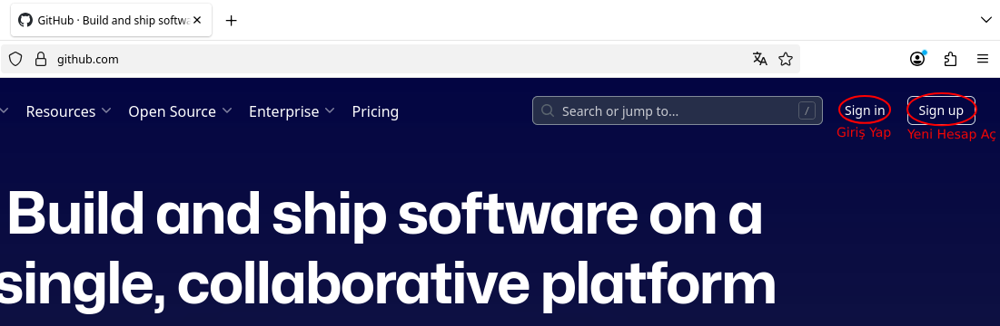
github Üzerinden Hesaba Giriş Yapılır¶
github hesabı açılır(kendilinuxunuyap) ve sağ tarafta bulunan menüden Your repostrores seçilir.
{kind=link}
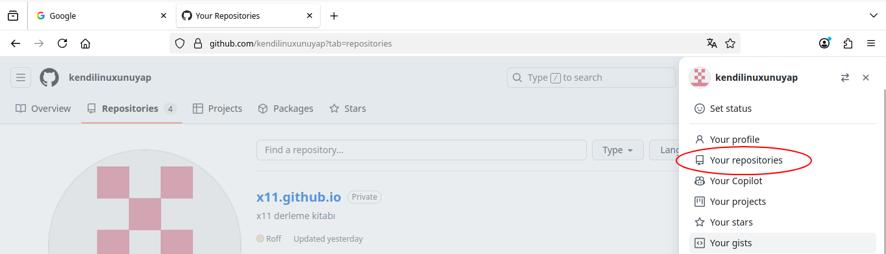
Yeni Depo Alanı Oluşturulur¶
Karşımıza gelen ekrandan New Seçeneği seçilir.
{kind=link}
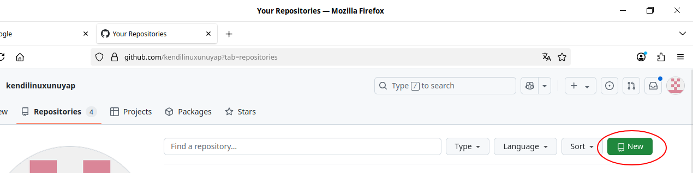
github repository oluşturulur(kly-binary-packages)
{kind=link}
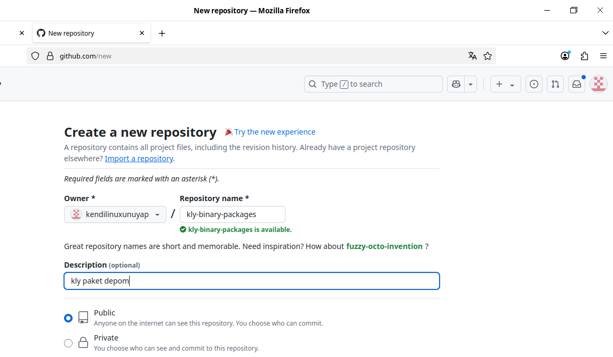
kly-binary-packages Depomuz Yerele(Bilgisayara) Kopyalanır(Clone)¶
kly-binary-packages adresi kopayanır.
{kind=link}
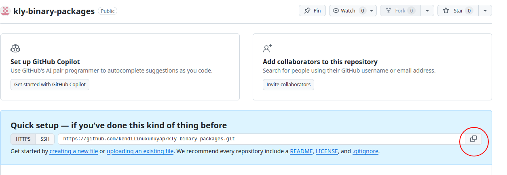
Yerelde(bilgisayarda) istediğiniz yere(masaüstünü tercih ettim) indirilir(klonlanır/download).
{kind=link}
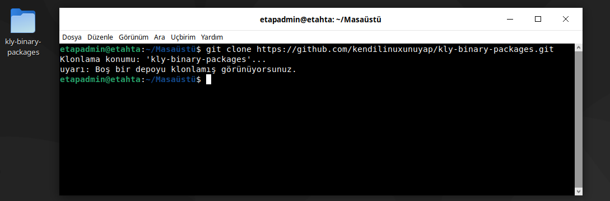
Paketimiz kly-binary-packages Dizinine Kopyalanır¶
{kind=link}
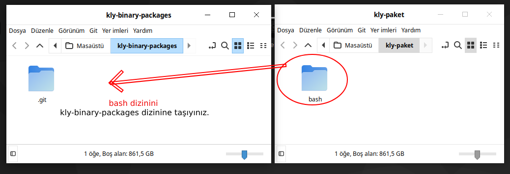
bash paketi aşağıdaki gibi taşınır.
{kind=link}
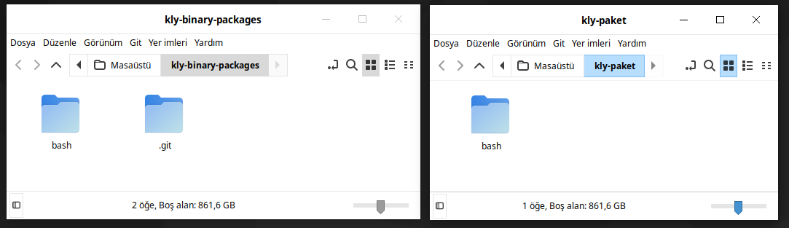
index Dosyası Oluşturulur¶
Aşağıdaki script kly paket dosyalarımızın olduğu dizinde tek tek açarak içerisinden klybuild dosyalarını çıkartır. Paketle ilgili bilgileri alıp index.lst dosyası oluşturulmaktadır. İstersek paketlerin local ortamda da index dosyasını oluşturabiliriz. Bu dokümanda github üzerinde oluşturacak şekilde anlatılmıştır. Paket listesinin olduğu index.lst dosyası aşağıdaki gibi olacaktır. Listede name, version ve depends(bağımlı olduğu paketler) bilgileri bulunmaktadır. Bilgilerin arasında | karekteri kullanılmıştır.
name="acl"|version="2.3.1"|depends="attr"|acl
name="attr"|version="2.5.1"|depends=""|attr
name="audit"|version='3.1.1'|depends=""|audit
name="bash"|version="5.2.21"|depends="glibc,readline,ncurses"|bash
{kind=link}
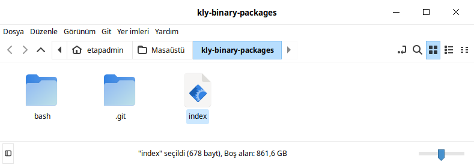
Yukarıda gösterildiği gibi kly-binary-packages dizininde aşağıda verilen index dosyasını oluşturunuz. Aşağıdaki script kodlarını index dosyasının içerisine ekleyin.
#-------------------------------------------------------------------------------------------------------------------------------
#!/bin/sh
#set -ex
mkdir /output -p
mkdir -p /klysource
>index.lst
find * -type f -name *.kly |
while IFS= read file_name; do
dosya="$(dirname $file_name)/klybuild"
version=$(cat $dosya|grep version=)
name=$(cat $dosya|grep name=)
depends=$(cat $dosya|grep depends=)
echo "$name|$version|$depends|$(dirname $file_name)">>index.lst
done
cp -rf index.lst /output
# *****************************source files******************************
cp -prfv ./* /klysource/
find /klysource/* -type f -name *.kly |
while IFS= read file_name; do
rm -rf "$file_name"
done
tar -cf /output/klysourcepackage.tar /klysource/
rm -rf /klysource
main.yml Dosyası Oluşturulur¶
github'a dosya gönderdiğimizde index bash scriptimizi çalıştırması için aşağıda gösterilen şekilde kly-binary-packages dizinine .github/workflows dizinini oluşturun. .github/workflows dizini içine main.yml dosyasını oluşturunuz.
{kind=link}
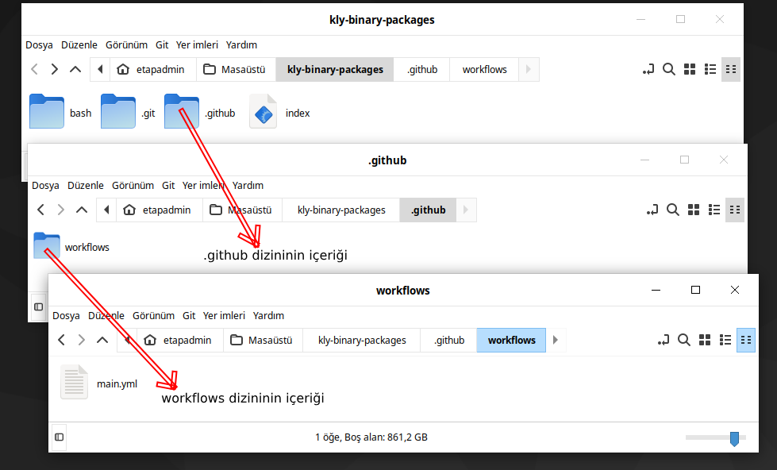
main.yml dosyasındaki sh index satırı index scriptimizi her githuba paket gönderdiğimizde(commit) çalışacak ve index.lst dosyasını oluşturacaktır. main.yml içeriğine aşağıdaki kodları ekleyiniz.
#-------------------------------------------------------------------------------------------------------------------------------
name: CI
on:
push:
branches: [ master ]
schedule:
- cron: "0 0 1 2 6"
jobs:
compile:
name: depoindex
runs-on: ubuntu-latest
steps:
- name: Check out the repo
uses: actions/checkout@v2
- name: Run the build process with Docker
uses: addnab/docker-run-action@v3
with:
image: debian:testing
options: -v ${{ github.workspace }}:/root -v /output:/output
run: |
cd /root
sh index
- uses: "marvinpinto/action-automatic-releases@latest"
with:
repo_token: "${{ secrets.GITHUB_TOKEN }}"
automatic_release_tag: "current"
prerelease: false
title: "Latest release"
files: |
/output/*
Not: Burada main.yml dosyasında [ master ] ifadesi master dalında çılışıldığını ifade eder. Eğer farklı dalla çalışıyorsak buradaki [ master ] yerine kullandığınız dalı yazınız.
github Dosya oluşturma İzni Verin¶
İnternet üzerinden kly-binary-packages reposunda settings->action->general->Workflow permissions->Read and write permissions işaretlenmelidir.
{kind=link}
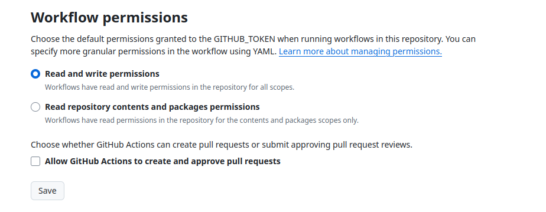
github'a kly-binary-packages Dizinini Yükleyelim(Uplod/Commit)¶
Yerelde kly-binary-packages dizini içeriğini github üzerine aşağıdakı gibi gönderilir.
{kind=link}
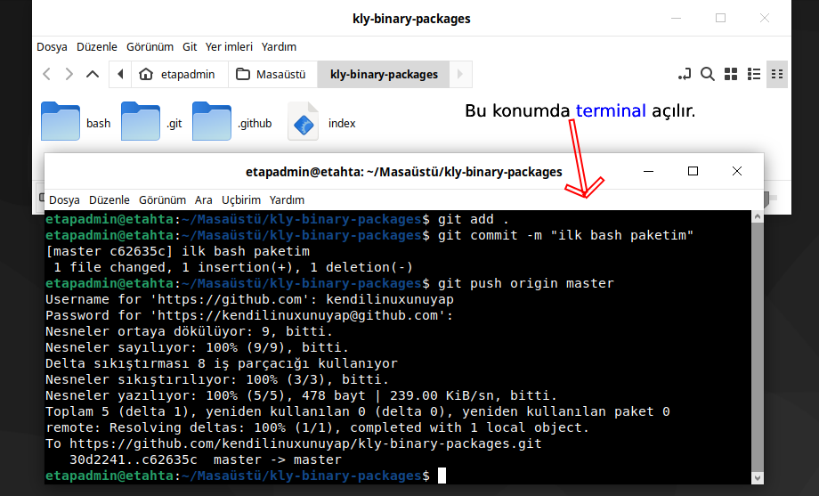
github kly-binary-packages Depo Kontrolü¶
Depomuza gönderdikten sonra aşağıdaki gibi gözükecektir.
{kind=link}
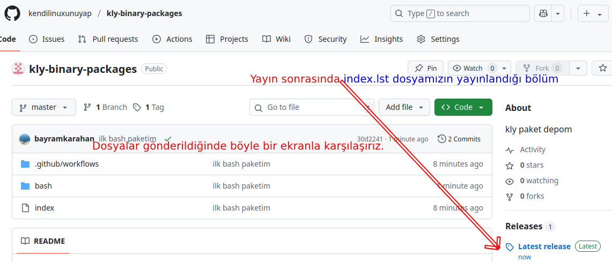
index.lst İçeriği¶
https://github.com/kendilinuxunuyap/kly-binary-packages/releases/download/current/index.lst adresinde bulunan dosya aşağıdaki gibi liste oluşturacaktır.
{kind=link}
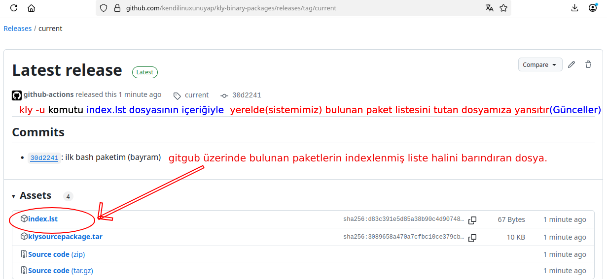
index.lst içeriği aşağıdaki gibidir. Tek paket olduğu için(sadece bash) bu şekilde gözüküyor.
name="bash"|version="5.2.21"|depends="glibc,readline,ncurses"|bash
Birden fazla paketin olması durumunda aşağıdaki gibi gözükecektir.
name="acl"|version="2.3.1"|depends="attr"|acl
name="attr"|version="2.5.1"|depends=""|attr
name="audit"|version='3.1.1'|depends=""|audit
name="bash"|version="5.2.21"|depends="glibc,readline,ncurses"|bash